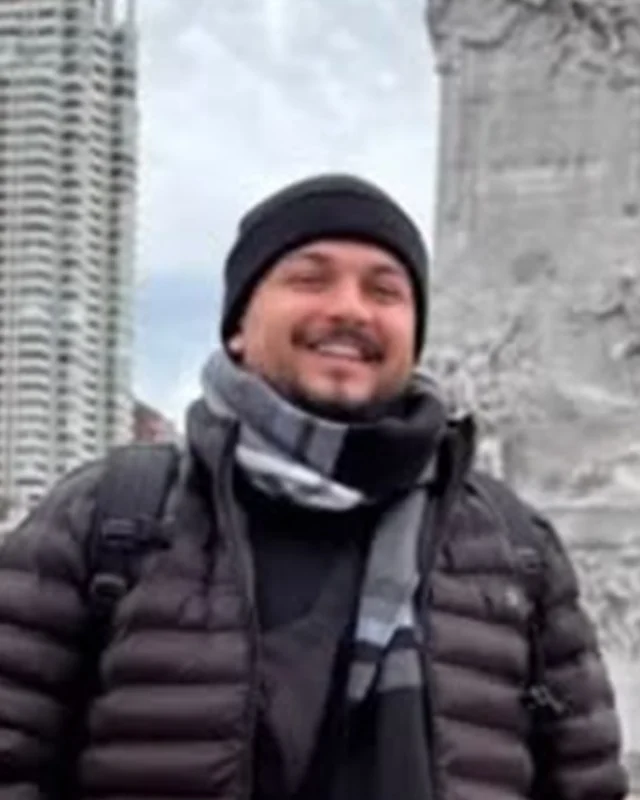

Founder & CEO
Gabriel
+R$6M ComercializadosUltrapassou R$6 milhões comercializados aos 18 anos. Segue à frente da operação: cada técnica que ele ensina, ele usou esta semana.
Seu mês bom não pode depender de sorte.
Gabriel, Sávio e Paulo comercializaram mais de R$17 milhões e seguem vendendo todo dia. Na Turma Fundadora eles abrem ao vivo o processo que usam — para 20 pessoas, na primeira turma da RASTRO.
Os números de quem vai acompanhar a sua venda
A empresa
A RASTRO é uma empresa de desenvolvimento comercial. Ela não nasceu de uma pesquisa sobre o que vende bem na internet — nasceu de três operações reais que deram certo e foram unificadas em um processo só.
Gabriel, Sávio e Paulo juntaram o que cada um já fazia: as estratégias, as técnicas, os erros que custaram caro e os acertos que se repetiram. O que sobrou dessa filtragem virou a metodologia RASTRO.
Todo resultado deixa um rastro. O nosso tem oito etapas — e é ele que a gente abre na Turma Fundadora.
Ultrapassou R$6 milhões comercializados aos 18 anos. Segue à frente da operação: cada técnica que ele ensina, ele usou esta semana.
Trouxe para a RASTRO a parte de estrutura: como transformar venda que deu certo em processo que outra pessoa consegue repetir.
Aos 29 anos, responde pela operação de vendas da RASTRO: é quem roda o processo todo dia e cobra o resultado dele — e quem vai acompanhar a sua venda durante a turma.

A operação hoje
+R$1M comercializados por mês através das operações atuais.Não é um número de um ano bom que passou. É o que a operação fecha enquanto esta página está no ar — e é exatamente esse processo que abre na Turma Fundadora.
A maioria dos vendedores é boa em duas ou três dessas etapas e perde dinheiro nas outras cinco.
Encher a agenda sem depender de indicação e sorte.
A primeira frase que faz o lead responder em vez de ignorar.
Perguntar de um jeito que o próprio cliente enxerga o problema.
Conduzir o preço sem entregar desconto por medo.
Resposta pronta para “tá caro”, “vou pensar” e “vou ver com meu sócio”.
Voltar sem parecer insistente — e sem sumir.
Pedir a venda na hora certa, com a palavra certa.
Transformar cliente fechado em dois novos clientes.
20 vagas · R$297 · pagamento único
Para quem é
Encontros ao vivo com os três fundadores, cobrindo os 8 pilares do método. Não é aula gravada para assistir sozinho.
20 pessoas. Pequena de propósito: dá pra olhar a venda de cada um e corrigir a rota.
Grupo com contato direto com Gabriel, Sávio e Paulo durante toda a turma.
Scripts de abordagem, negociação e follow-up, mais a matriz de objeções pronta pra usar.
Você traz sua venda travada e a gente destrava junto. É pra usar dentro da venda que você já faz.
Pela Hotmart. Liberado no e-mail cadastrado assim que a compra é aprovada.
7 dias. Pede o reembolso pela Hotmart e devolvemos 100%, sem burocracia.
Compra segura via Hotmart
Você paga menos agora porque entra antes de existir prova de aluno — e porque o acompanhamento de perto só cabe em 20 pessoas uma vez.
O que passa na sua cabeça
Curso gravado você assiste e esquece. Aqui são 20 pessoas, ao vivo, com a gente olhando a sua venda travada.
A diferença não está no conteúdo — está em ter alguém corrigindo você enquanto você aplica.
Somos. E é exatamente por isso que os números são de agora, e não de dez anos atrás.
O que a gente ensina está sendo usado esta semana, no mercado como ele é hoje.
Prospecção, diagnóstico, objeção e fechamento existem em qualquer venda.
O que muda é o roteiro — e roteiro a gente adapta junto com você no acompanhamento.
Justo. Só que o preço está nesse patamar porque é a turma fundadora.
Na próxima, com o produto gravado e estruturado, ele sobe. Esse é o momento mais barato de entrar.
A metodologia é pra aplicar dentro da venda que você já faz, não além dela.
Se você já está prospectando, você já tem o tempo — está usando ele errado.
Serve, e talvez seja melhor ainda: você aprende o processo certo antes de criar vício.
Só precisa ter (ou estar prestes a ter) algo pra vender.
7 dias de garantia. Pede o reembolso pela Hotmart e devolvemos 100%.
Dúvidas práticas
Pra quem vende ou quer vender com performance: vendedor, closer, SDR, autônomo, prestador de serviço que negocia o próprio trabalho.
Serve tanto pra quem já vende quanto pra quem está começando.
Encontros ao vivo com Gabriel, Sávio e Paulo, cobrindo os 8 pilares do método, com scripts liberados ao longo do caminho e um grupo de acompanhamento direto.
Metodologia completa dos 8 pilares, encontros ao vivo, scripts de abordagem, negociação e follow-up, matriz de objeções, grupo de acompanhamento e revisão das suas vendas reais.
Assim que a compra é aprovada na Hotmart, o acesso chega no e-mail cadastrado, junto com o convite para o grupo da turma.
R$297, pagamento único. Cartão, Pix ou boleto, via Hotmart.
Você traz sua venda travada e a gente destrava junto, durante a turma.
É contato direto com os três fundadores, não é suporte por ticket.
Daqui a seis meses você vai estar vendendo de um jeito ou de outro. Ou no improviso, torcendo pro mês fechar — ou com um caminho que você sabe repetir.